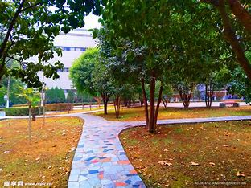
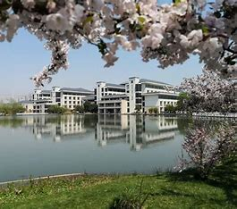
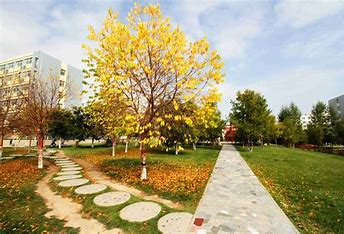
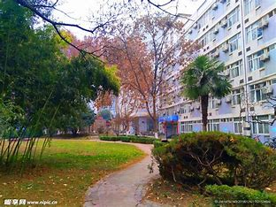

春日的校园，是一幅被春风晕染开的水墨画卷，每一处角落都藏着独属于春华的温柔与生机。清晨的阳光穿过枝叶的缝隙，碎金般洒在铺满青石板的小径上，微风拂过，裹挟着樱花与玉兰的清甜香气，丝丝缕缕钻入鼻腔。教学楼旁的香樟林早已褪去了冬日的萧瑟，新抽的嫩叶嫩得仿佛能掐出水来，层层叠叠的绿意间，偶尔有雀鸟掠过，留下一串清脆的啼鸣，在静谧的校园里荡开层层涟漪。
沿着校园的林荫道缓步前行，一侧是波光粼粼的人工湖，湖面倒映着岸边抽芽的垂柳，柳丝如碧玉雕琢的丝带，随风轻摆，搅碎了水中的云影。湖中的锦鲤成群结队地游弋，红的、白的、金的鳞片在阳光下熠熠生辉，偶尔甩动尾巴，溅起一圈圈细碎的涟漪，为静谧的湖面增添了几分灵动。湖边的草坪上，不知名的野花星星点点地绽放着，紫的、黄的、粉的，像撒落在绿毯上的五彩宝石，引得蜜蜂嗡嗡采蜜，蝴蝶翩跹起舞，构成了一幅鲜活的春日生态图。
午后的校园操场，被春日的暖阳紧紧包裹。塑胶跑道上，有同学迎着春风慢跑，汗水浸湿了衣衫，却挡不住脸上洋溢的青春活力；操场边的紫藤萝架下，藤蔓已攀上支架，淡紫色的花穗含苞待放，仿佛在积蓄力量，等待春日盛放时的惊艳。就连校园角落那片不起眼的小花园，也被春华赋予了生机，迎春花开得热烈，一串串金黄色的小花垂挂下来，如金色的瀑布，与一旁粉嫩的桃花相映成趣，桃花瓣随风飘落，铺成了一条浪漫的花径，每一步踏下去，都像是踩在温柔的春日梦境里。



